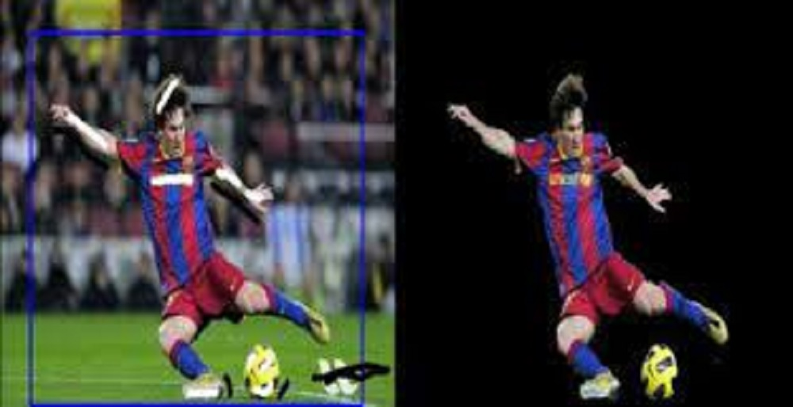

Instance Segmentation with Mask R-CNN and GrabCut.
Outline
We have built an exciting app that people can use for their instance segmentation tasks. Users can upload their own images and have them processed with a Mask R-CNN model and returned as an annotated image. We offer multiple modes to allow users to specify the type of objects they are interested in. Furthermore, we provide the additional functionality of GrabCut that users can make use of to obtain the mask for a particular instance of an object.
Background
Instance Segmentation
Instance Segmentation is a combination of object detection (classify individual objects and localize them using a bounding box) and Semantic Segmentation (classify each pixel into the given classes). Instance Segmentation involves detection and segmentation of the individual instances of objects.

Figure 1: Understanding Instance Segmentation. (Image Source: Halbe, 2020)
Mask R-CNN
Mask R-CNN (He et al., 2017) extends Faster R-CNN to pixel-level image segmentation. The key point is to decouple the classification and the pixel-level mask prediction tasks. A third branch for predicting an object mask is added on top of the Faster R-CNN framework to function in parallel with the existing branches for classification and localization. This mask branch is a small fully-connected network that is applied to each RoI to predict a segmentation mask on a per pixel basis.

Figure 2: Mask R-CNN is Faster R-CNN model with image segmentation. (Image source: He et al., 2017)
GrabCut
The GrabCut method is used to separate the object from background in an image. The user marks a rectangle around the object of interest. The outer part of the rectangle defines the definite background whilst the innter part contains an unknown combination of the object and the background. The iterative GrabCut algorithm is then used to assign each pixel in this bounding box its corresponding label of Foreground ot Background.

Figure 3: GrabCut algorithm at work.
Motivation
The task of instance segmentation is extremely important for critical computer vision tasks such as those involved with autonomous vehicles. For instance, if we solely use object detection in the autonomous vehicles, there is a chance that the bounding boxes of multiple cars may overlap and this will confuse the self-driving vehicle. Instance segmentation helps overcome this flaw. The ability to detect the spatial boundaries of objects down to pixel level detail instead of broadly sensing their location could mean the difference between the vehicle safely navigating its way through and the vehicle striking other cars or objects. In a world of high velocity traffic and unpredictability, the smallest details can have some of the most serious consequences, good or bad. Instance segmentation will continue to play a crucial role in various computer vision tasks long into the future. Autonomous vehicles, medical imaging, facial recognition, robotic procedures; all of these fields rely on being able to accurately differentiate object instances, and we are fascinated by its long term potential.
Approach
High Level Steps
We make use of Facebook AI Research's (FAIR) Detectron2 (Wu et al., 2019) as the Mask R-CNN package to implement instance segmentation
We have six instance segmentation modes:
Generic - This mode provides the largest detection range for common objects.
Marine - Detect marine animals such as fish, crab, starfish and marine waste such as bottles, nets, and wreckage.
City - A mode for users who want to perform instance segmentation on urban street scenes.
Nature - For those who love squirrels and butterflies.
Balloon - A mode for performing instance segmentation on frames involving balloons.
Micro-Controller - Can be used for frames containing popular micro-controllers like Arduinos.
To enhance App interactivity, we make use of the baseline model (R50-FPN) that has the lowest inference time. Only the model for the Marine mode uses X101-FPN because the pre-trained model requires this specific architecture.
We then obtain Mask R-CNN models (either pre-trained or fine-tuned) for each of the corresponding modes. The fine-tuning is done on Google Colaboratory.
Implement GrabCut algorithm
Develop App Front-End
Integrate all the above components through App backend
Implementation
Instance Segmentation
We utilize Mask R-CNN models for each of the above modes.
-
Generic
Dataset: Large Vocabulary Instance Segmentation (Gupta et. al, 2019)
A large dataset that contains more than 2 million high quality instance segmentation masks for over 1000 entry-level object categories in 164k images.
The pre-trained LVIS model provided by Detectron2 is used for this mode.
Metrics for Bounding Box
AP AP50 AP75 APs APm APl 23.632 39.284 24.502 18.723 28.728 37.372 Metrics for Segmentation Mask
AP AP50 AP75 APs APm APl 24.383 37.699 26.004 16.690 31.206 41.163

Inference with pre-trained LVIS model on custom image
-
Marine
Dataset: TrashCan (Hong et. al, 2020)
A dataset comprising of 7212 images with observations of marine animals, trash, ROVs and multiple other forms of underwater flora and fauna. We used the instance version of the dataset that contains 22 different classes of objects.
The pre-trained model available alongside the dataset is used for this mode. (Note: bounding box metrics aren't provided.)
Metrics for Segmentation Mask
AP AP50 AP75 APs APm APl 30.0 55.3 29.4 23.2 31.7 48.6

Inference with fine-tuned model on TrashCan test set
City
Dataset: CityScapes (Cordts et. al, 2016 )
A large-scale dataset comprising of a diverse set of image frames of street scenes from 50 different cities. There are 5000 images with fine annotations and 20000 with coarse annotations.
The pre-trained CityScapes model provided by Detectron2 is used. (Note: bounding box metrics aren't provided. Only Segm/AP and Segm/AP50 are provided. )
Metrics for Segmentation Mask
AP AP50 36.481 62.219

Inference with pre-trained Cityscape model on custom city image
Nature
Dataset: Nature Dataset (Olafenwa, 2020)
This is a dataset containing around 800 images of squirrels and butterfiles.
The Mask R-CNN model is obtained through fine-tuning the pre-trained COCO model using the train set. The model is then evaluated on the test set.
Metrics for Bounding Box
AP AP50 AP75 APs APm APl 63.750 96.952 75.514 nan nan 64.126 Metrics for Segmentation Mask
AP AP50 AP75 APs APm APl 73.770 96.442 84.619 nan nan 76.358

Inference with fine-tuned model on Nature test set
Balloon
Dataset: Matterport's Balloon Dataset (Waleed, 2018)
This is a small dataset provided by Matterport containing balloon instances.
The Mask R-CNN model is obtained through fine-tuning the pre-trained COCO model using the train set. The model is then evaluated on the test set.
Metrics for Bounding Box
AP AP50 AP75 APs APm APl 65.014 84.353 79.896 9.398 54.380 77.943 Metrics for Segmentation Mask
AP AP50 AP75 APs APm APl 75.856 83.622 83.365 7.249 57.591 92.700

Inference with fine-tuned model on Balloon test set
Micro-Controller
Dataset: Micro-Controller Segmentation Data (Tanner)
A small dataset containing annotations for instances of Arduino, Raspberry Pi, Lora, and ESP8266.
The Mask R-CNN model is obtained through fine-tuning the pre-trained COCO model using the train set. The model is then evaluated on the test set.
Metrics for Bounding Box
AP AP50 AP75 APs APm APl 76.320 91.749 91.749 nan 90.000 80.033 Metrics for Segmentation Mask
AP AP50 AP75 APs APm APl 88.020 91.749 91.749 nan 90.000 96.894

Inference with fine-tuned model on Micro-Controller test set
Challenges Faced
Refactoring our project and proposal
We had to rapidly change the direction of our project after receiving feedback for our initial proposal. Our original plan involved implementing the Mask R-CNN as in the original paper and replicating the results on the COCO Dataset and then implementing the model on autonomous vehicle datasets such as the Cityscapes Dataset and the Indian Driving Dataset . We also intended to spend time on enhancing model performance by making modifications such as tweaking the model architecture (e.g., theR-CNN backbones), and exploring different training techniques (e.g., multi-scale train/test, horizontal fliptest). We realized that this plan was impractical given the time and computer resources available. We decided to change the direction and emphasis of our project to deliver an end result that is both tangible and achievable.
Platform Independence of App
Detectron2 is natively supported only on Linux and Mac OS. We spent a lot of time exploring workarounds to have it work on Windows OS as well. However, we were not able to successfully install Detectron2 on our Windows machines.
Computational Resources
We were unable to train or fine-tune on large datasets due to the following reasons:
- To use Google Coloboratory, the dataset must be uploaded to Google drive in order for Colab to read it. This was a significant bottleneck because uploading large datasets onto Google drive is slow - with the bandwidth of 100Mbps download speed and 40Mbps upload speed, uploading 1GB of files to Google drive took us 5 hours. Although we were able to find an existing COCO dataset on a publicly accessible Google drive, other datasets we were considering (e.g., Open Images Dataset, Indian Driving Dataset) were not publicly available on Google drive.
- The second problem was related to the limitation of the Colab environment. Even when we were able to mount the public Google drive that contains the COCO dataset, Colab crashed upon loading the large-scale dataset (2017 COCO training set is of size 19GB). After days of research and trial and error, we eventually managed a workaround using symbolic links, which ensures that Colab wouldn’t crash due to being inundated by many images. This, however, requires the dataset to be present on the Google drive ina specific format. we were only able to configure the 2017 COCO dataset into such formats, but not for other datasets.
- Colab was under-powered to train the Mask R-CNN model from scratch with such a large dataset. The free version of Colab only provides 12.8 GB of RAM, one single GPU (with 11.4MB of memory), and each session only allows 12 hours of training. More annoyingly, if the browser gets idle, the Colab session would be terminated automatically, which means the the client computer can’t be turned off or used for other purposes while training. The authors of [1] said that it took them 32 hours to train the Mask R-CNN model from scratch with COCO dataset using a 8-GPU machine. With an single-GPU machine, the 12-hour session limit, and the termination mechanism, we deemed Colab not appropriate for such kind of heavy training task.
Availability of instance segmentation datasets
There were not a lot of instance segmentation datasets to choose from while fine-tuning because we had to constrain the size of the dataset to account for the limited computational resources.
Documents
Reference
[1] Kaiming He, Georgia Gkioxari, Piotr Dollar, and Ross Girshick. Mask r-cnn. In Proceedings of the IEEEInternational Conference on Computer Vision, pages 2961–2969, 2017.
[2] Yuxin Wu and Alexander Kirillov and Francisco Massa and Wan-Yen Lo and Ross Girshick. Detectron2. https://github.com/facebookresearch/detectron2. 2019
[3] Hong, Jungseok; Fulton, Michael S; Sattar, Junaed. TrashCan 1.0 An Instance-Segmentation Labeled Dataset of Trash Observations. Retrieved from the Data Repository for the University of Minnesota, https://doi.org/10.13020/g1gx-y834. 2020
[4] Marius Cordts, Mohamed Omran, Sebastian Ramos, Timo Rehfeld, Markus Enzweiler, Rodrigo Benen-son, Uwe Franke, Stefan Roth, and Bernt Schiele. The cityscapes dataset for semantic urban scene understanding, 2016.
[5] Agrim Gupta, Piotr Dollar, and Ross Girshick. A Dataset for Large Vocabulary Instance Segmentation. Proceedings of the {IEEE} Conference on Computer Vision and Pattern Recognition. 2019
[6] Waleed Abdulla. Mask R-CNN for object detection and instance segmentation on Keras and TensorFlow. https://github.com/matterport/Mask_RCNN. 2017.
[7] G. Varma, A. Subramanian, A. Namboodiri, M. Chandraker, and C. V. Jawahar. IDD: A Dataset for Exploring Problems of Autonomous Navigation in Unconstrained Environments. In 2019 IEEE WinterConference on Applications of Computer Vision (WACV), pages 1743–1751, 7
[8] Tsung-Yi Lin, Michael Maire, Serge Belongie, James Hays, Pietro Perona, Deva Ramanan, Piotr Doll ́ar,and C Lawrence Zitnick. Microsoft coco: Common objects in context. In European Conference onComputer Vision, pages 740–755. Springer, 2014.